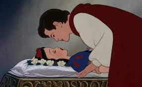

Uczniowie nie mogli w to uwierzyć Killer di Pablo escobar naprawdę zabił sora (myśleli że se Killer z nich beke robił XD) Po chwili (sor był już martwy 🤣) Killer wpadł na pomysł by zalać ciało sora kwasem ale klasa się nie zgodziła bo nie mieli kwasu XD. Po pięciu minutach do klasy wbiła żona sora Jakuba i pocałowała go w policzek. Magicznie sor Jakub sie obudził, klasa była w szoku Killer di Pablo escobar postanowił opowiedzieć całą sytuację (klasa patrzyła się na sora cały czas) Jakub przerażony powiedział że zrozumiał swój błąd i więcej tak nie zrobi. Po tygodniu i tak ich wykorzystywał do robienia stron dla swoich klientów. Nikt tego nie wie że tak naprawdę ma już zarobione 100k na kącie i się dzielić nie będzie.
